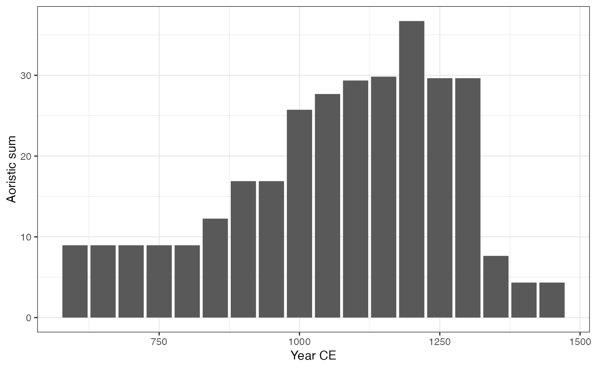
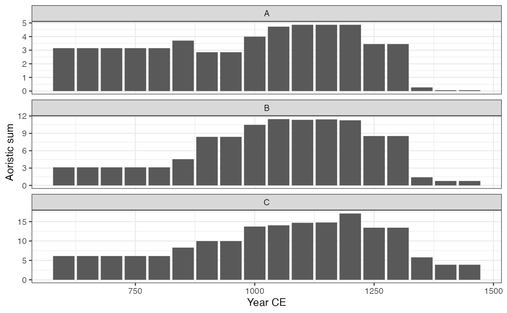
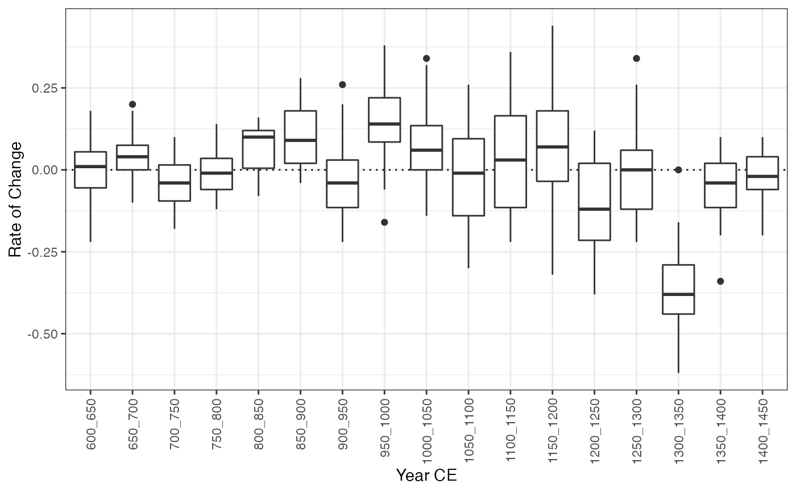
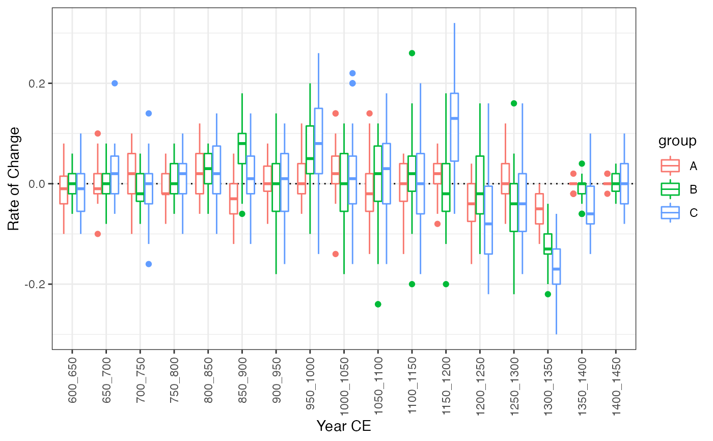

Computes the rate of change from an aoristic analysis.
Usage
roc(object, ...)
# S4 method for AoristicSum
roc(object, n = 100)Arguments
- object
An
AoristicSumobject.- ...
Currently not used.
- n
A non-negative
integergiving the number of replications (see details).
Value
A RateOfChange object.
References
Baxter, M. J. & Cool, H. E. M. (2016). Reinventing the Wheel? Modelling Temporal Uncertainty with Applications to Brooch Distributions in Roman Britain. Journal of Archaeological Science, 66: 120-27. doi: 10.1016/j.jas.2015.12.007 .
Crema, E. R. (2012). Modelling Temporal Uncertainty in Archaeological Analysis. Journal of Archaeological Method and Theory, 19(3): 440-61. doi: 10.1007/s10816-011-9122-3 .
Examples
## Aoristic Analysis
data("zuni", package = "folio")
## Set the start and end dates for each ceramic type
dates <- list(
LINO = c(600, 875), KIAT = c(850, 950), RED = c(900, 1050),
GALL = c(1025, 1125), ESC = c(1050, 1150), PUBW = c(1050, 1150),
RES = c(1000, 1200), TULA = c(1175, 1300), PINE = c(1275, 1350),
PUBR = c(1000, 1200), WING = c(1100, 1200), WIPO = c(1125, 1225),
SJ = c(1200, 1300), LSJ = c(1250, 1300), SPR = c(1250, 1300),
PINER = c(1275, 1325), HESH = c(1275, 1450), KWAK = c(1275, 1450)
)
## Keep only assemblages that have a sample size of at least 10
keep <- apply(X = zuni, MARGIN = 1, FUN = function(x) sum(x) >= 10)
## Calculate date ranges for each assemblage
span <- apply(
X = zuni[keep, ],
FUN = function(x, dates) {
z <- range(unlist(dates[x > 0]))
names(z) <- c("from", "to")
z
},
MARGIN = 1,
dates = dates
)
## Coerce to data.frame
span <- as.data.frame(t(span))
## Calculate aoristic sum (normal)
aorist_raw <- aoristic(span, step = 50, weight = FALSE)
plot(aorist_raw)
 ## Calculate aoristic sum (weights)
aorist_weigth <- aoristic(span, step = 50, weight = TRUE)
plot(aorist_weigth)
## Calculate aoristic sum (weights)
aorist_weigth <- aoristic(span, step = 50, weight = TRUE)
plot(aorist_weigth)

## Calculate aoristic sum (weights) by group
groups <- rep(c("A", "B", "C"), times = c(50, 90, 139))
aorist_groups <- aoristic(span, step = 50, weight = TRUE, groups = groups)
plot(aorist_groups)

## Rate of change
roc_weigth <- roc(aorist_weigth, n = 30)
plot(roc_weigth)

## Rate of change by group
roc_groups <- roc(aorist_groups, n = 30)
plot(roc_groups, facet = FALSE)
